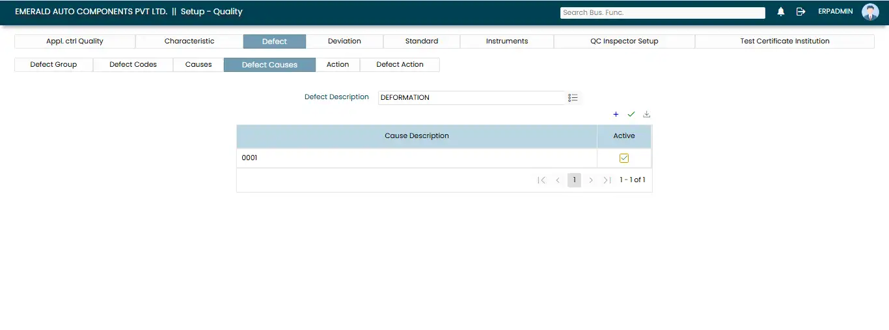

<div data-category="Quality control Management" data-title="Defect Causes" data-updated="December 01, 2025" data-contributors="RoadmapIT" data-breadcrumb="Home,Quality control Management,Defect Causes">
  <div class="page-content">
    <p>The Defect Causes can be defined in this screen. This screen is used to add, modify, and delete the Defect Causes.</p>

    <h5>Navigation Path:</h5>
    <p class="fs-6">Quality Control \ Setup \ Setup - Quality</p>
    
    <!-- Add Defect Causes -->
    <h2>Add Defect Causes:</h2>
    <ul style="list-style-type: none; align-content: center">
      <li class="mouse-icon">Choose the Defect from the LOV.</li>
      <li class="mouse-icon">Click the add icon to create a new Defect Cause.</li>
      <li class="mouse-icon">Enter the Cause.</li>
      <li class="mouse-icon">
        Click
        <i class="bi bi-check-lg fs-4 mx-1 text-success"></i>
        to save.
      </li>
    </ul>

    <!-- Modify Defect Causes -->
    <h2>Modify Defect Causes:</h2>
    <ul style="list-style-type: none; align-content: center">
      <li class="mouse-icon">Only descriptions can be modified.</li>
      <li class="mouse-icon">Click on the Defect Cause.</li>
      <li class="mouse-icon">Change the Description.</li>
      <li class="mouse-icon">
        Click
        <i class="bi bi-check-lg fs-4 mx-1 text-success"></i>
        to save.
      </li>
    </ul>

    <!-- Disable Defect Causes -->
    <h2>Disable Defect Causes:</h2>
    <ul style="list-style-type: none; align-content: center">
      <li class="mouse-icon">Only unused Defect Causes can be disabled.</li>
      <li class="mouse-icon">Select the Defect Cause.</li>
      <li class="mouse-icon">Disable the Active flag.</li>
    </ul>
  </div>
</div>